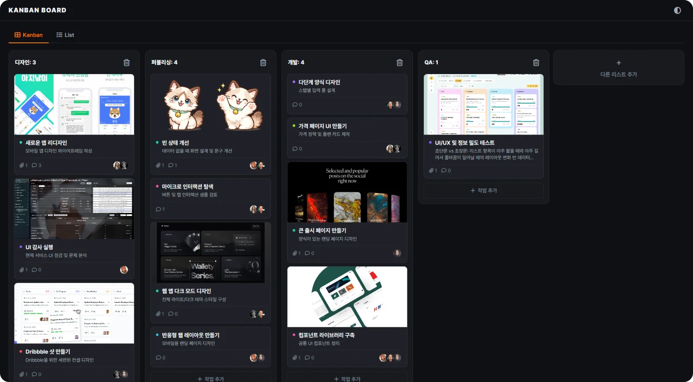
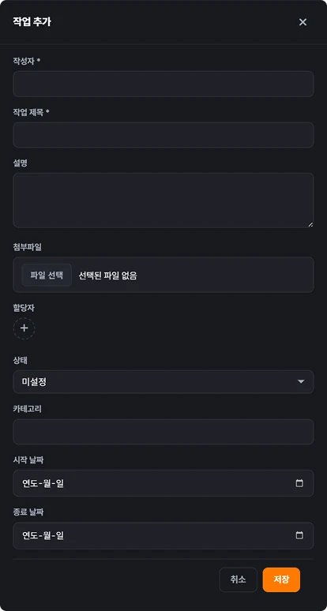

02 추가 경험 · 개인 칸반 프로토타입
이미지 카드와 작업 생성을 직접 구현해 본 개인 작업입니다.
01
작업 구분
여러 작업의 이미지와 제목을 카드에서 함께 확인하도록 구성했습니다.
02
직접 조작
카드를 이동하는 인터랙션을 프로토타입으로 구현했습니다.
03
작업 생성
제목·설명·담당자·상태·일정을 입력하는 화면을 구현했습니다.
PROJECT 10 · PERSONAL PROJECT · AI-ASSISTED PROTOTYPE
이미지와 제목으로 작업을 구분하는 보드 UI를 설계했습니다. AI의 도움을 받아 카드 이동과 작업 입력을 구현했으며, 실제 사용자 평가는 진행하지 않았습니다.
"이미지·제목으로 작업을 구분하고 카드 이동·작업 생성을 구현"

CASE AT A GLANCE
개인 UX/UI 설계와 AI 보조 구현 결과입니다. 시연 화면이며 실제 사용자 평가는 진행하지 않았습니다. 카드 이동과 작업 생성의 구현 경험을 소개합니다.
01 프로젝트 배경
이미지·제목·담당자 정보를 카드에 배치하고 카드 이동과 작업 생성 입력을 구현했습니다. 현재 컬럼에는 작업 분야와 진행 상태가 함께 포함되어 있습니다.
02 추가 경험 · 개인 칸반 프로토타입
여러 작업의 이미지와 제목을 카드에서 함께 확인하도록 구성했습니다.
카드를 이동하는 인터랙션을 프로토타입으로 구현했습니다.
제목·설명·담당자·상태·일정을 입력하는 화면을 구현했습니다.
03 설계 결정
카드에 작업을 구분할 이미지·제목과 관련 정보를 배치했습니다.
AI의 도움을 받아 카드 이동 인터랙션을 구현했습니다.
작업 제목·설명·첨부·담당자·상태·일정을 입력하도록 구성했습니다.
04 구현 범위와 다음 개선
설계 자료

05 회고
카드 이동과 작업 입력을 직접 구현하면서 정적인 시안에서 확인하기 어려운 동작을 살펴봤습니다. 현재 보드에는 작업 분야와 진행 상태가 같은 수준의 컬럼으로 섞여 있습니다.
분야는 카드 분류로, 진행 상태는 컬럼으로 분리하는 안을 먼저 비교하겠습니다. 이후 작업 생성과 카드 이동 과업을 사용자에게 확인받고 싶습니다.